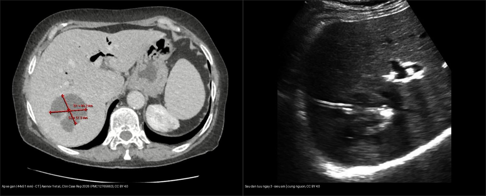
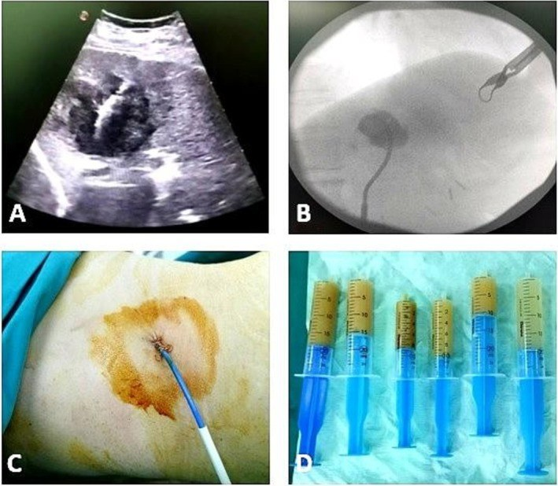
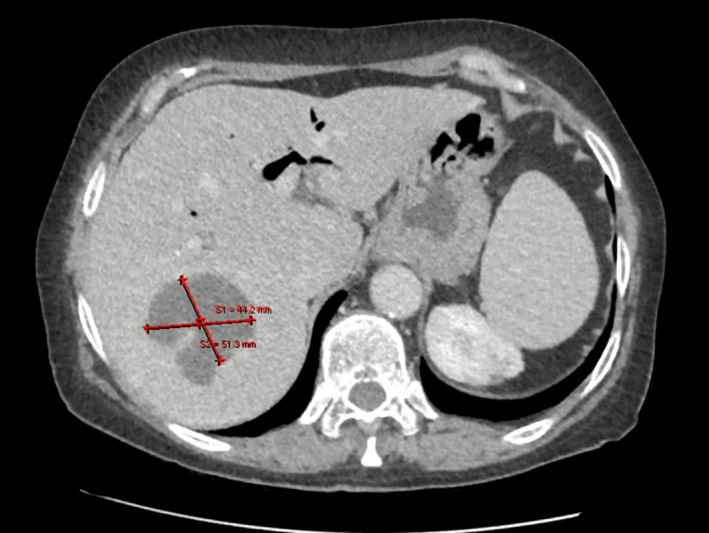
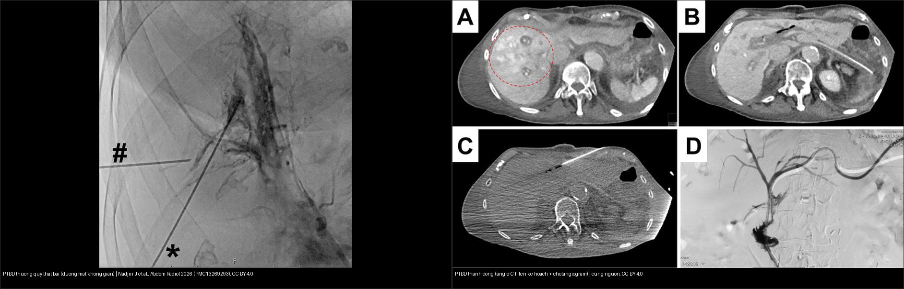
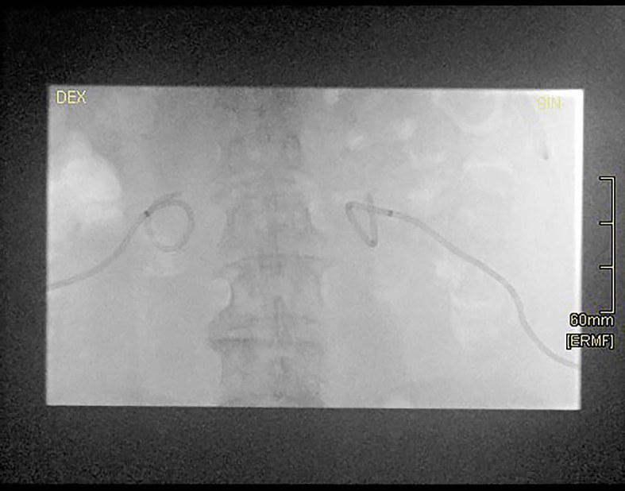
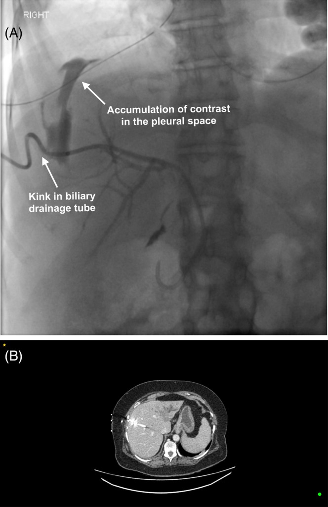

910 — Dẫn lưu: áp-xe, PTBD & thận qua da / Image-guided drainage (abscess, PTBD, PCN)
Tags: pattern:dan-luu pattern:ap-xe vung:bung-tiet-nieu protocol:PTBD protocol:PCN protocol:Seldinger
Mức chắc chắn (certainty): tổng hợp y văn (literature synthesis) — tự biên từ 5 nguồn mở (Asenov 2026 CC BY; Nadjiri 2026 CC BY; Kuhelj 2025 CC BY; Lee 2026 CC BY; Jayabalan 2025 CC BY-NC-ND) + các ca nguyên văn gắn ảnh.
1. Tổng quan — vì sao "ống thông đúng đường" an toàn hơn "đâm thẳng"
- Ba thủ thuật dẫn lưu cùng nguyên lý, khác khoang: dẫn lưu ổ áp-xe (mủ trong ổ khu trú), PTBD (percutaneous transhepatic biliary drainage — mật trong đường mật giãn), PCN (percutaneous nephrostomy — nước tiểu trong đài bể thận ứ). Cả ba đều đặt catheter (pigtail) dưới hướng dẫn siêu âm/CT/fluoroscopy.
- Seldinger (kim → dây dẫn → ống) vs trocar (đâm thẳng): TẠI SAO Seldinger an toàn hơn ở tạng sâu/nhỏ: dây dẫn giữ vững đường vào trong khi nong dần (serial dilatation) và luồn ống theo dây — giảm rách mô, giảm số lần chọc, kiểm soát được hướng. Điều này đặc biệt quan trọng khi đường mật không giãn (ống nhỏ cỡ kim 22G ≈ 0,7 mm) — nhiều mũi chọc tăng biến chứng (Nadjiri 2026).
- Đài thận sau–dưới qua góc Brödel (20–30°, sau đường nách sau): TẠI SAO vô mạch: nhánh động mạch phân thùy sau đi ở ranh giới, chọc qua nhu mô đài sau–dưới tránh được mạch máu lớn → ít chảy máu và ít rò nước tiểu so với chọc thẳng bể thận (Kuhelj 2025).
- PTBD "sâu" là hiểm — màng phổi phản chiếu xuống thấp: màng phổi thành–hoành trải sâu xuống dưới bờ dưới phổi, nhất là phía sau và bên. Bình thường không có khoang màng phổi ở đây (hai lá áp sát), nhưng nếu đường chọc quá cao/xuyên qua → rò mật vào khoang màng phổi = biliothorax (dịch mật trong màng phổi). TẠI SAO: kim/catheter đi qua màng phổi trước khi vào gan rồi mật thấm ngược lên (Jayabalan 2025).
- Ngưỡng định lượng (bắt buộc):
- Ổ áp-xe dẫn lưu được: điển hình ≥ 5 cm (hoặc < 5 cm nhưng không đáp ứng kháng sinh); dùng catheter pigtail + rửa (lavage); ca minh chứng áp-xe gan 6 cm phân thùy VII sau ERCP, dẫn lưu ra mủ Enterococcus faecalis, khỏi sau 10 ngày kháng sinh (Asenov 2026).
- PTBD có đường mật giãn/có khí (aerobilia): ống ≥ 1,5–2 mm mới thấy rõ trên CT; ống nhỏ hơn cần CT fluoroscopy động để bắt dòng khí thoáng qua; angio-CT cho thành công lấy đường mật 100% ca, thời gian can thiệp trung bình 25 phút, không biến chứng (Nadjiri 2026).
- PCN: 22,7% catheter bị di trú trong thời gian theo dõi; thời gian trung bình đến lần đổi ống 4,16 tháng; loại catheter, số mũi khâu và tuổi > 70 KHÔNG ảnh hưởng tỷ lệ di trú (p = 0,57 / 0,34 / 0,61) (Kuhelj 2025).
- Rút catheter PTBD: rút sớm 7–10 ngày (n = 199) vs muộn > 10 ngày (n = 158) sau khi giải quyết tắc mật — không khác biệt biến chứng, nhưng nằm viện ngắn hơn ~5,36 ngày (12 vs 17 ngày) (Lee 2026).
- Tiêu chí rút mọi catheter dẫn lưu: hết sốt + dịch < 10 mL/ngày trong 24–48 giờ + cải thiện lâm sàng.
2. Gamut theo khoang ứ (Gamut)
- Ổ mủ (áp-xe) + sốt + cấy: dẫn lưu qua da (trừ viêm ruột thừa/túi mật — ưu tiên mổ nội soi!) — Seldinger + rửa; áp-xe gan hay gặp sau đường mật (ERCP, sỏi), áp-xe ổ bụng sau mổ.
- Tắc mật + bilirubin cao + nhiễm trùng (cholangitis): PTBD (nhánh trái/phải thấp, tránh xuyên hoành) — stent trong–ngoài; khi ERCP thất bại (hẹp rốn gan, đường mật không giãn, phẫu thuật Bilroth/ruột nối mật–ruột).
- Ứ nước + sốt + sỏi (pyonephrosis): PCN đài sau–dưới qua Brödel + kháng sinh (nhiễm trùng + tắc = dẫn lưu trước!).
- Chọc sai khoang: xuyên hoành → biliothorax/tràn khí, chọc thẳng bể thận → rò nước tiểu + chảy máu.
3. Bảng so sánh phân biệt (ma trận đối chiếu)
| Thực thể (entity) | Hình ảnh/kỹ thuật | Chốt vào (rule-in) | Chốt loại (rule-out) | Gợi ý xác nhận |
|---|---|---|---|---|
| Áp-xe dẫn lưu được | Ổ dịch viền ngấm thuốc, ± khí; đường vào an toàn trên US/CT | Ổ ≥ 5 cm (hoặc < 5 cm thất bại kháng sinh) + Seldinger + cấy + rửa | Ruột/túi mật/mạch xen giữa → đổi đường hoặc mổ | Dẫn lưu + kháng sinh định hướng |
| PTBD đúng | Nhánh mật thấp (trái/phải dưới), không xuyên hoành; mật chảy ra | Đường mật ≥ 1,5–2 mm + cholangiogram xác nhận + mật chảy | Đường quá cao + khí/dịch màng phổi → xuyên hoành | Stent trong–ngoài; theo dõi bilirubin |
| PCN đúng | Đài sau–dưới, qua góc Brödel, qua nhu mô | Nước tiểu chảy + hết sốt | Chọc thẳng bể thận → rò/máu | Kháng sinh + tán sỏi sau |
| Chọc sai khoang | Xuyên hoành (biliothorax) / bể thận trực tiếp | Tràn khí–mật màng phổi / máu–nước tiểu | Xuyên đúng đường → không biến chứng | Dẫn lưu màng phổi / nút mạch – mổ |
| Catheter di trú (PCN) | Catheter rời vị trí trên fluoroscopy, mất chức năng | 22,7% di trú, trung bình 4,16 tháng | Còn đúng vị trí → tiếp tục | Không phụ thuộc loại ống/số mũi khâu |

Trái: CT bụng cản quang — ổ áp-xe gan thùy phải 44 × 51 mm, viền ngấm thuốc. Phải: siêu âm ngày 3 sau dẫn lưu — catheter đúng vị trí, ổ áp-xe thu nhỏ. Nguồn: Asenov Y et al., Clin Case Rep 2026 (PMC12765663), CC BY 4.0. Ảnh ghép letterbox.
(A) Siêu âm: kim vào giữa ổ áp-xe. (B) Fluoroscopy: xác nhận catheter pigtail đúng vị trí. (C) Catheter ra da + gạc mật. (D) Các bơm hút mủ. Nguồn: Asenov Y et al., Clin Case Rep 2026 (PMC12765663), Fig. 2, CC BY 4.0.
CT cản quang: ổ áp-xe gan 44 × 51 mm phân thùy VII — chỉ định dẫn lưu qua da (đo kích thước > 5 cm + không đáp ứng kháng sinh). Nguồn: Asenov Y et al. (PMC12765663), Fig. 1, CC BY 4.0.4. Protocol dẫn lưu + ngưỡng theo dõi + flowchart
- Chuẩn bị & kỹ thuật: siêu âm/CT (hoặc angio-CT) dẫn đường; ưu tiên Seldinger; cấy dịch + rửa ổ sau dẫn lưu; kháng sinh theo cấy.
- Luật "thấp và trong nhu mô": PTBD nhánh thấp (tránh ngách sườn–hoành); PCN qua nhu mô đài sau–dưới (góc Brödel) — không bao giờ chọc thẳng bể thận.
- Theo dõi & rút: rút khi hết sốt + dịch < 10 mL/ngày (24–48 giờ); với PTBD trong viêm đường mật, rút sớm 7–10 ngày an toàn và rút ngắn nằm viện ~5,36 ngày (Lee 2026); PCN/PTBD có thể thay/thay định kỳ (PCN trung bình đổi ở 4,16 tháng) (Kuhelj 2025).
- Khi đường mật khó (không giãn + có khí): angio-CT (tích hợp CT + fluoroscopy một phòng) giúp thấy ống nhỏ, rút ngắn thời gian (25 phút), tăng độ chính xác (Nadjiri 2026).

Trái: PTBD đường thường quy thất bại — đường mật không giãn cỡ kim 22G, nhiều mũi chọc, thuốc cản quang lan tỏa. Phải: thành công bằng angio-CT — A/B CT lập kế hoạch + C kim trong đường mật + D cholangiogram (PTBD). Nguồn: Nadjiri J et al., Abdom Radiol 2026 (PMC13269293), CC BY 4.0. Ảnh ghép letterbox. Cholangiogram qua PTBD: (A) lần đầu — khuyết thiếu trong lòng đường mật (mũi tên, sỏi/khối). (B) kiểm tra lại sau can thiệp. Nguồn: Lee JM et al., J Clin Med 2026 (PMC13607037), CC BY 4.0.
Cholangiogram qua PTBD: (A) lần đầu — khuyết thiếu trong lòng đường mật (mũi tên, sỏi/khối). (B) kiểm tra lại sau can thiệp. Nguồn: Lee JM et al., J Clin Med 2026 (PMC13607037), CC BY 4.0.

Fluoroscopy: catheter PCN loop đúng vị trí hai bên dù chỉ khâu cố định bên phải không giữ (minh họa catheter type/số mũi khâu không quyết định di trú). Nguồn: Kuhelj D et al., Radiol Oncol 2025 (PMC12707554), CC BY 4.0.flowchart TD
A[Ứ mủ / mật / nước + sốt] --> B{Khoang nào?}
B -->|Ổ mủ > 5 cm hoặc thất bại KS| C[Áp-xe: Seldinger + cấy + rửa]
B -->|Tắc mật + cholangitis| D[PTBD: nhánh thấp, không xuyên hoành]
B -->|Ứ nước + sốt + sỏi| E[PCN: Brödel, qua nhu mô đài sau-dưới]
C --> F{Đường vào an toàn?}
D --> F
E --> F
F -->|Ruột/mạch/túi mật xen giữa| G[Đổi đường hoặc mổ]
F -->|An toàn| H[Dẫn lưu đúng + theo dõi]
H --> I{Hết sốt + dịch < 10 mL/ngày?}
I -->|Có| J[Rút catheter]
I -->|Không| K[Kiểm tra tắc/di trú + nâng bậc]
H -->|Đường mật khó, ống nhỏ| L[Angio-CT: 25 phút, chính xác hơn]
5. Biến thể bình thường và cạm bẫy
- PTBD cao xuyên hoành → biliothorax: màng phổi phản chiếu xuống thấp phía sau/bên; rò mật vào màng phổi gây tràn dịch–khí màng phổi. Luôn đánh giá màng phổi trước chọc và chọn nhánh thấp.

(A) Tubogram: gấp ống dẫn lưu mật (kink) + thuốc cản quang tích tụ trong khoang màng phổi (mũi tên). (B) CT ngang: vị trí ống dẫn lưu mật. Nguồn: Jayabalan D et al., Respirol Case Rep 2025 (PMC12230195), Fig. 2, CC BY-NC-ND 4.0 — giữ nguyên bản.- Chọc thẳng bể thận → rò nước tiểu + chảy máu: luôn qua nhu mô đài sau–dưới (Brödel); nếu chảy máu → ép/nút mạch.
- Nhiễm trùng + tắc mà chỉ kháng sinh, không dẫn lưu = sốc nhiễm trùng: dẫn lưu TRƯỚC, kháng sinh sau! (pyonephrosis, cholangitis mủ).
- Cạm bẫy "catheter nhìn đúng nhưng không chức năng": luôn đối chiếu lượng dịch + lâm sàng (hết sốt); PCN di trú thường gặp (22,7%) và không loại trừ được bằng loại ống/số mũi khâu (Kuhelj 2025) — theo dõi bằng chức năng, không chỉ hình ảnh.
- Cạm bẫy mặt cắt: ổ dịch cạnh cơ hoành — phân biệt màng phổi vs dưới hoành vs trong gan bằng dấu crus lệch, dấu bare area, vị trí tương quan; tránh nhầm màng phổi thành gan khi lập kế hoạch đường vào.
6. Tự lượng giá — Blind Quiz
Ca 1 — Bệnh nhân 72 tuổi sau ERCP (lấy sỏi + cắt cơ vòng) sốt cao trong 48 giờ. CT bụng dưới đây — findings, chẩn đoán và xử trí?
- Hỏi: mô tả ổ dịch (kích thước, vị trí)? Dẫn lưu được không? Bước tiếp theo?
Bấm để hiện đáp án (findings + chẩn đoán)
- Dấu hiệu (findings): ổ áp-xe gan phân thùy VII, 44 × 51 mm (≈ 6 cm), viền ngấm thuốc, sau ERCP.
- Chẩn đoán (diagnosis): áp-xe gan mủ sau ERCP (biến chứng hiếm) — dẫn lưu qua da dưới hướng dẫn siêu âm, mủ Enterococcus faecalis, khỏi sau 10 ngày kháng sinh.
- Xử trí: dẫn lưu qua da (catheter pigtail) + cấy + kháng sinh định hướng; theo dõi siêu âm.
- Nguồn ảnh: Asenov Y et al., Clin Case Rep 2026 (PMC12765663), Fig. 1, CC BY 4.0.
Ca 2 — Bệnh nhân vàng da tắc mật, đường mật KHÔNG giãn, ERCP thất bại. Nhìn hình PTBD, cách nào giúp thành công?
- Hỏi: vì sao đường thường quy thất bại? Cách nào giúp thấy ống nhỏ? Ngưỡng kích thước ống nhìn thấy trên CT?
Bấm để hiện đáp án (findings + chẩn đoán)
- Dấu hiệu (findings): trái — nhiều mũi chọc, cản quang lan tỏa vì đường mật không giãn (cỡ kim 22G); phải — angio-CT lập kế hoạch + cholangiogram, PTBD đặt được.
- Chốt (clincher): đường mật ≥ 1,5–2 mm mới thấy rõ trên CT; ống nhỏ hơn cần CT fluoroscopy động để bắt dòng khí; angio-CT: thành công 100%, 25 phút, không biến chứng.
- Nguồn ảnh: Nadjiri J et al., Abdom Radiol 2026 (PMC13269293), Fig. 2 & 3, CC BY 4.0.
Ca 3 — Bệnh nhân ung thư đường mật đặt PTBD, sau đó khó thở. Xem tubogram + CT — sai ở đâu?
- Hỏi: dịch ở khoang nào? Tại sao PTBD lại gây tràn màng phổi? Xử trí?
Bấm để hiện đáp án (findings + chẩn đoán)
- Dấu hiệu (findings): tubogram — gấp ống (kink) + thuốc cản quang tích tụ trong khoang màng phổi; CT xác nhận vị trí ống.
- Chẩn đoán (diagnosis): biliothorax (dịch mật trong màng phổi) — đường chọc quá cao/xuyên màng phổi vì màng phổi phản chiếu xuống thấp phía sau/bên.
- Xử trí: dẫn lưu màng phổi + chỉnh/hạ đường PTBD (nhánh thấp); phòng bằng đánh giá màng phổi trước chọc.
- Nguồn ảnh: Jayabalan D et al., Respirol Case Rep 2025 (PMC12230195), Fig. 2, CC BY-NC-ND 4.0 (giữ nguyên bản).
Ca 4 — Bệnh nhân PCN hai bên: catheter nhìn đúng trên fluoroscopy. Có cần lo lắng di trú không, dựa vào đâu?
Bấm để hiện đáp án (findings + chẩn đoán)
- Dấu hiệu (findings): catheter PCN loop đúng vị trí hai bên; một bên chỉ khâu không giữ da.
- Chốt (clincher): loại catheter, số mũi khâu và tuổi > 70 KHÔNG ảnh hưởng di trú (p > 0,05); 22,7% PCN di trú, trung bình đổi lúc 4,16 tháng → theo dõi bằng chức năng (dịch + hết sốt), không chỉ hình ảnh.
- Nguồn ảnh: Kuhelj D et al., Radiol Oncol 2025 (PMC12707554), Fig. 2, CC BY 4.0.
Bài liên quan chéo
- 901 – Tổng quan IR
- 900 – Đại cương IR (an toàn)
- 920 – Nút mạch (xử trí chảy máu sau chọc)
- 152 – Sỏi niệu (nhiễm trùng + tắc → PCN)
- 131 – Tắc mật · 132 – Hẹp đường mật không xác định (PTBD)
Ảnh
910_apxe-gan_CT_PMC12765663-CCBY.jpg,910_dan-luu-apxe_US-XQ_PMC12765663-CCBY.jpg,910_dan-luu-apxe-sau_US_PMC12765663-CCBY.jpg,composite_dan-luu-apxe_CT-vs-sau-US.jpg— CC BY 4.0, Asenov Y et al., Clin Case Rep 2026 (PMC12765663).910_ptbd_CT-PTBD_PMC13269293-CCBY.jpg,910_ptbd-that-bai_CT_PMC13269293-CCBY.jpg,composite_ptbd_that-bai-vs-thanh-cong.jpg— CC BY 4.0, Nadjiri J et al., Abdom Radiol 2026 (PMC13269293).910_pcn_XQ_PMC12707554-CCBY.jpg— CC BY 4.0, Kuhelj D et al., Radiol Oncol 2025 (PMC12707554).910_ptbd_cholangiogram_PMC13607037-CCBY.jpg— CC BY 4.0, Lee JM et al., J Clin Med 2026 (PMC13607037).910_biliothorax_XQ-CT_PMC12230195-CCBYNCND.jpg— CC BY-NC-ND 4.0, Jayabalan D et al., Respirol Case Rep 2025 (PMC12230195). Giữ nguyên bản, không ghép.- Chi tiết giấy phép từng ảnh trong
images/CREDITS.md.
Không dùng để chẩn đoán độc lập khi chưa có người hướng dẫn.